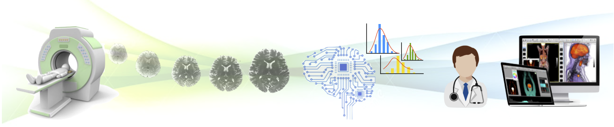

Data curator#

At the Neuroimaging Research Laboratory (NeuroPoly) lab, based at Ecole Polytechnique, University of Montreal, we work to better understand the brain and the spinal cord using state-of-the-art imaging techniques, with many potential medical applications. We are developing advanced analysis methods to improve the quality of MRI data, as well as to extract meaningful clinical information.
We recruit an IT expert in data curation to help managing our internal and public database of MRI images.
📌 Main tasks#
Collect raw data via email, DropBox, Google Drive, ssh, http, smb, and via our local LAN and reformat it to be BIDS-compliant
Anonymize data (defacing, removal of identifying metadata)
Review data submitted by students and researchers.
Verify:
Image quality
Taxonomy (i.e. file names)
Metadata (in
.tsvand.jsonfiles)Anonymization
Merge pull requests
Identify validation steps that could be automated and work with the dev team to implement them
Monitor redundant data rate
Comply with IRB, consent and copyright compliance terms
Verify and perform data removal when requested by subjects
Administer dataset access control; in compliance with license/ethics terms
Add new contributors
For private datasets: add new read-only accounts
Remove users when they no longer need access
Schedule quarterly access audits
Provide basic technical support to users downloading datasets
Diagnose network connection problems
Isolate software version problems and incompatibilities
Monitor weekly dataset backups
Schedule and run data disaster recovery drills
Participate in BIDS to extend its use-cases
🧠 Skills:#
Familiarity with the unix command line (
ls,find,diff,du,xargs,curl,sha256sum/md5sum)Python scripting
e.g. can you open 1013 images and find their average voxel count?
can you write validation scripts?
gitThe use of
git rebase,git commit --amend,git push --forceand their implicationsgit filter-repo, and its implications
🙌 Bonus Skills#
🏀 The team#
We are a friendly team composed of academic researchers, students and software developers
💰 Salary#
$30/h if you are good, up to $50/h if you are excellent.
📅 Schedule and work arrangement#
This is a long term position, which could be part-time or full time.
Work can be done remotely or in-presence (Montreal)
🚀 Why take this job?#
Join an environment that fosters autonomy, passion and creativity
Take leadership in open-source projects with strong impact in the medical field
Develop strong image processing skills with experts in medical imaging
✍️ How to apply?#
Fill up the application form below. You might be contacted for an interview.